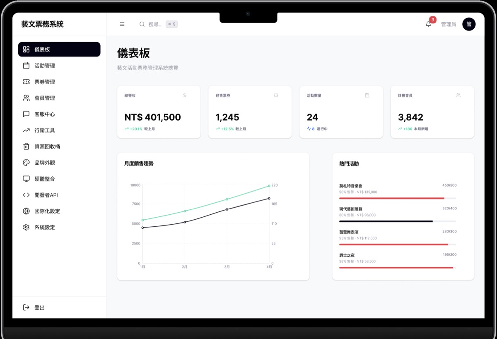
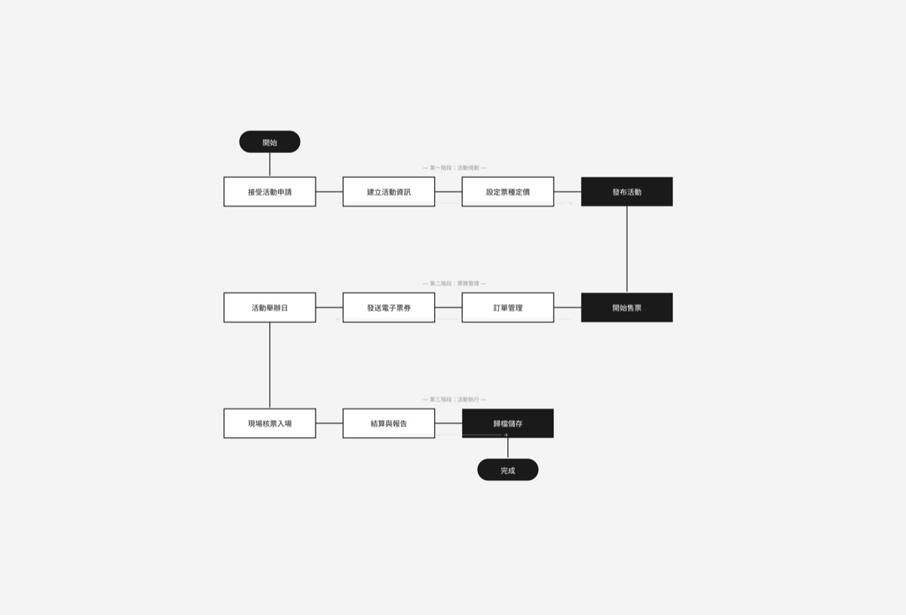
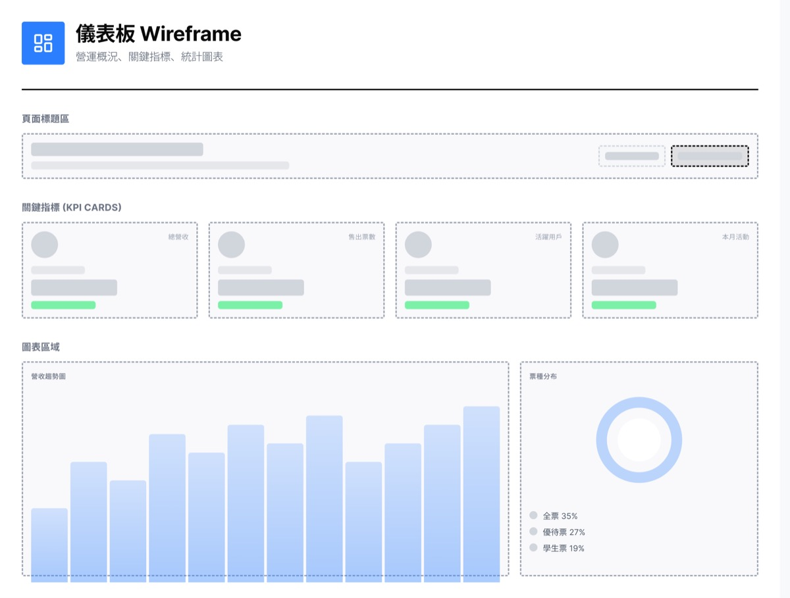
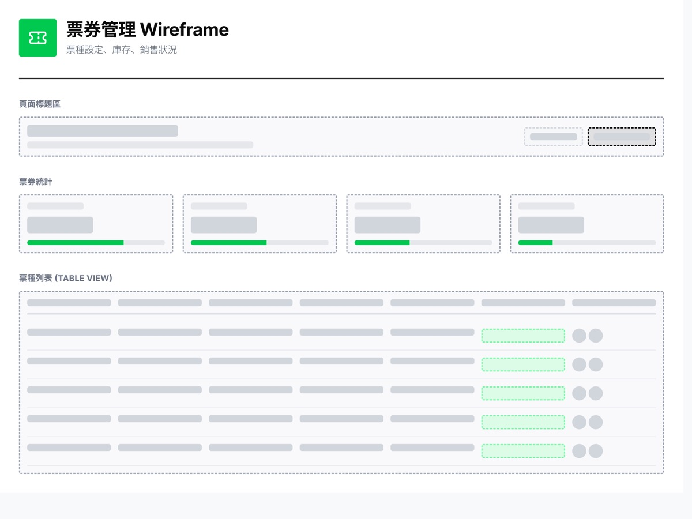
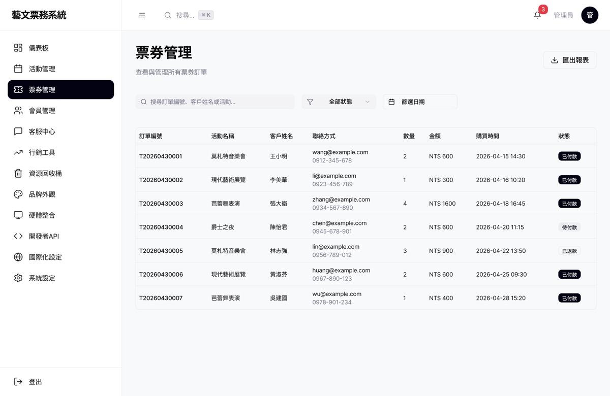
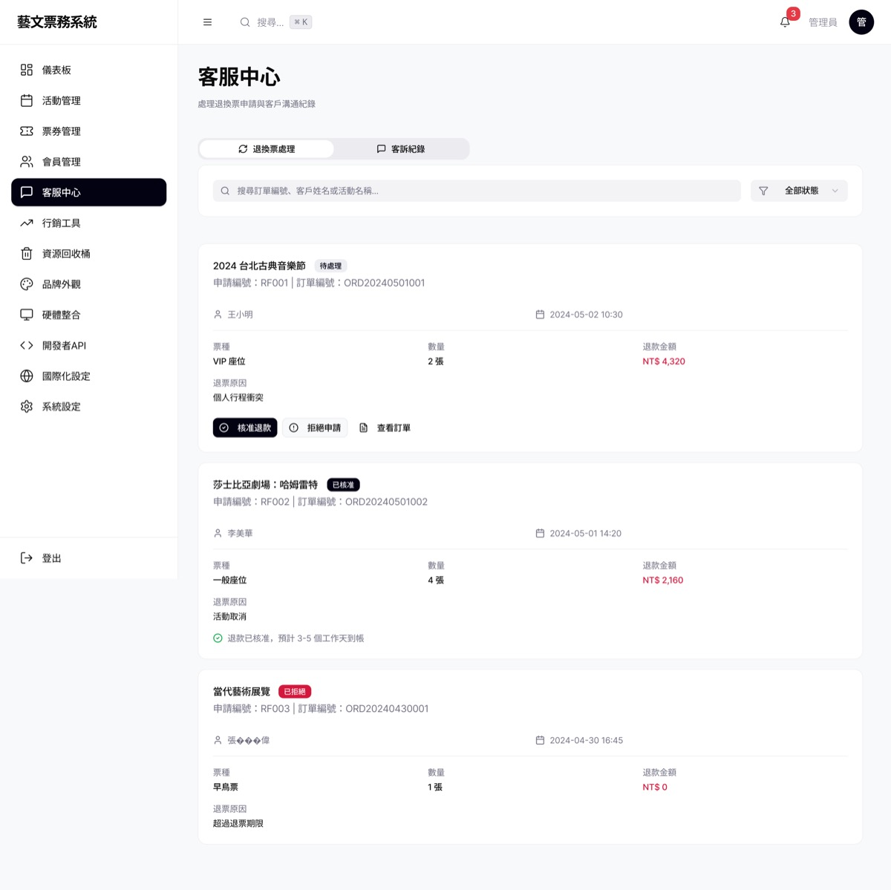
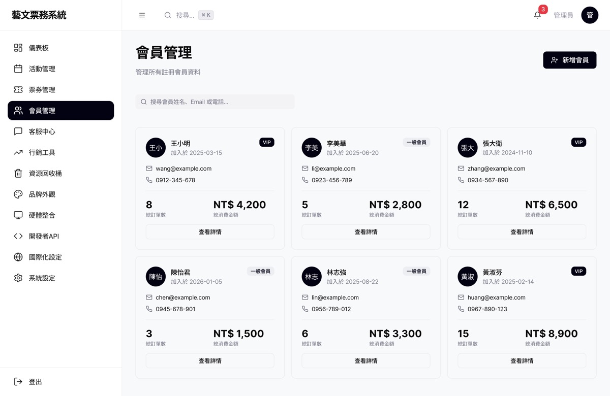
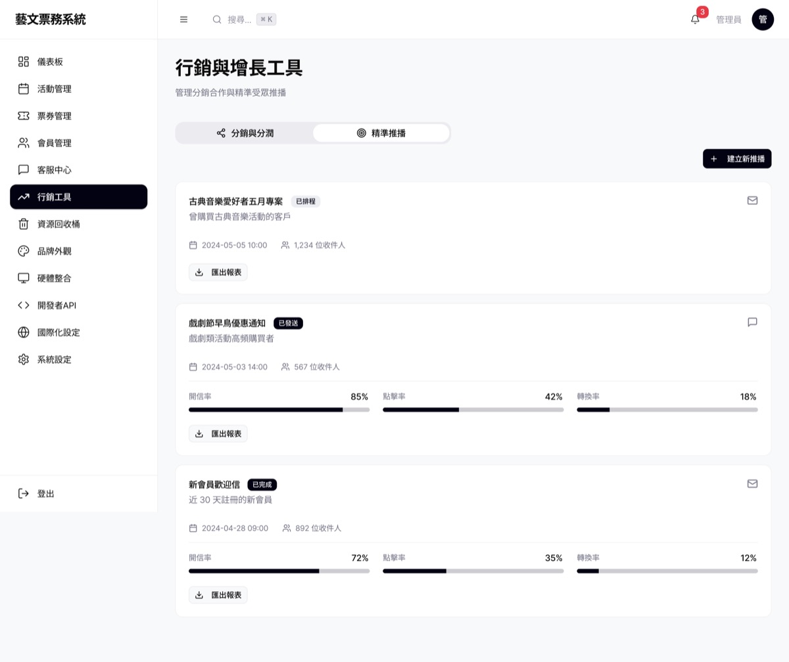

Case Study · Admin Dashboard
藝文票務管理後台
B2B 票務管理系統，聚焦高資訊密度下的 Dashboard、票券管理、客服退票與高風險操作防呆，協助藝文場館營運團隊有效率地管理活動與訂單。
在高資訊密度的後台裡，替每一個高風險操作加上防呆。
Dashboard UI
Admin System
B2B SaaS

專案背景
藝文場館的營運人員每天要處理大量活動、票券與客訴資料。後台系統若資訊架構不清楚，容易造成操作失誤，尤其是退換票這類高風險、不可逆的操作。這個專案希望在高資訊密度的介面中，仍維持清楚的層級與安全的操作防呆機制。
問題一
資訊密度高
儀表板需同時呈現營收、售票、活動與會員數據，容易造成視覺負擔。
問題二
高風險操作
退換票、資源回收桶等操作一旦誤觸，會直接影響營收與顧客體驗。
問題三
模組眾多
從活動管理到系統設定橫跨十餘個模組，需要清楚的側邊導覽與分類。
流程與線框
在進入視覺設計前，先透過流程圖釐清票務核心流程，並用 wireframe 確認資訊層級與版位配置。



關鍵畫面
將流程與線框落地為完整視覺設計，並在退換票等高風險流程中加入明確的確認機制。




成果與反思
這個專案讓我更理解如何在資訊密度高的 B2B 後台中，透過分層資訊架構、清楚的側邊導覽與防呆確認機制，降低操作人員的認知負擔與誤觸風險，同時維持系統的專業感與可信度。